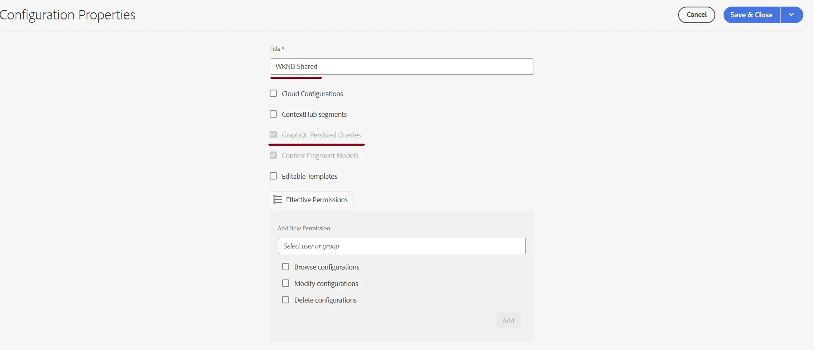
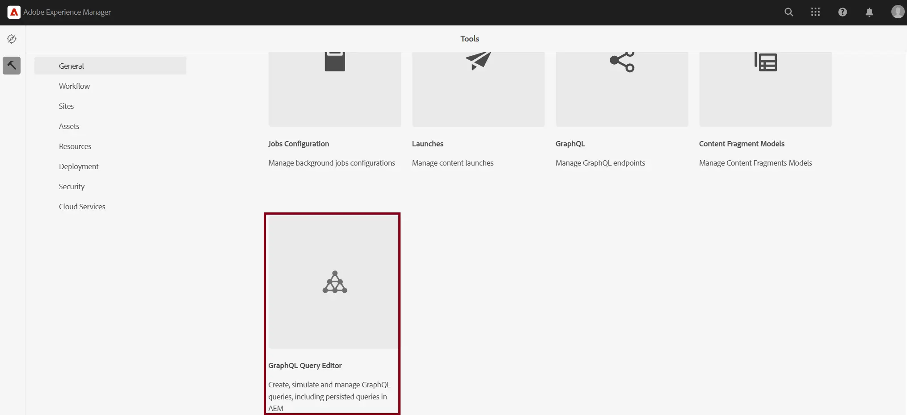
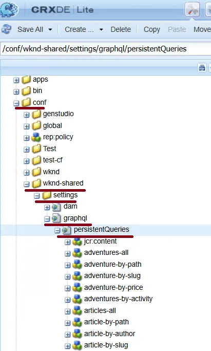

GraphQL in Adobe Experience Manager (AEM)
Adobe Experience Manager (AEM) has embraced the headless CMS paradigm by providing robust GraphQL APIs. GraphQL in AEM enables developers to query and retrieve precisely the content they need from Content Fragments, supporting flexible and efficient content delivery for modern web and mobile applications. Unlike traditional REST APIs, GraphQL allows clients to specify their data requirements in a single request, reducing over-fetching and under-fetching of data.
Using GraphQL in AEM & Understanding Persistent Queries
Possibilities with AEM GraphQL:
- Query structured content fragments stored in AEM.
- Retrieve only the fields needed, optimizing payload size and response times.
- Support for dynamic queries with variables, enabling flexible client-side data fetching.
- Integration with modern front-end frameworks and static site generators.
What Are GraphQL Persistent Queries?
Persistent Queries are a powerful feature in AEM that allows you to store predefined GraphQL queries on the server. Instead of sending the entire query from the client each time, clients can simply reference the stored query by name or identifier. This brings several advantages:
- Cacheability: Because persisted queries are executed via HTTP GET requests, their responses can be cached at the Dispatcher and CDN layers, dramatically improving performance compared to standard POST-based GraphQL requests, which are typically not cacheable.
- Security: By limiting which queries are available and hiding the full schema from public clients, you reduce the risk of exposing sensitive data or schema details.
- Simplicity: Clients only need to know the identifier of the query, reducing payload size and standardizing data access patterns.
How to Create and Use Persistent Queries in AEM
- Enable Persistent Queries for your site configuration in AEM: Navigate to Tools > General > Configuration Browser, select your project, and ensure "GraphQL Persistent Queries" is enabled.

- Create and Persist a Query: The preferred method is using the GraphiQL IDE built into AEM, where you can write, test, and save queries directly.

Alternatively, you can use a cURL command or tools like Postman to persist queries.
This stores the query under the specified configuration and label.
Executing a Persisted Query
Clients execute a persisted query with a simple GET request:
GET AEM_HOST/graphql/execute.json/Project-Config-Name/Persisted-Query-Name
For example:
GET https://example.com/graphql/execute.json/wknd/plain-article-query
To pass variables, append them to the URL:
GET AEM_HOST/graphql/execute.json/Project-Config-Name/Persisted-Query-Name;variable1=value1;variable2=value2
For example:
GET https://example.com /graphql/execute.json/wknd/get-simple-article;apath=%2Fcontent%2Fdam%2Fmy-project%2Ftest-article
Managing and Caching
Persisted queries are stored under /conf/site-name/settings/graphql/persistedQueries in the AEM repository.

You can configure cache headers (e.g., max-age, s-maxage) for each query, optimizing cache behavior at the browser, Dispatcher, and CDN layers.
So why use GraphQL persistent queries in AEM?
GraphQL Persistent Queries in AEM offer a best-practice approach for headless content delivery:
- Performance: By enabling caching at multiple layers, they reduce server load and speed up content delivery.
- Security: Restricting available queries minimizes the attack surface and prevents schema exposure.
- Maintainability: Centralizing queries on the server simplifies client implementation and versioning.
- Scalability: Efficient caching and reduced payloads support high-traffic, global applications.
In summary, Persistent Queries are essential for any AEM headless implementation aiming for performance, security, and maintainability. They represent a key step in leveraging AEM’s GraphQL capabilities to deliver modern, scalable digital experiences.